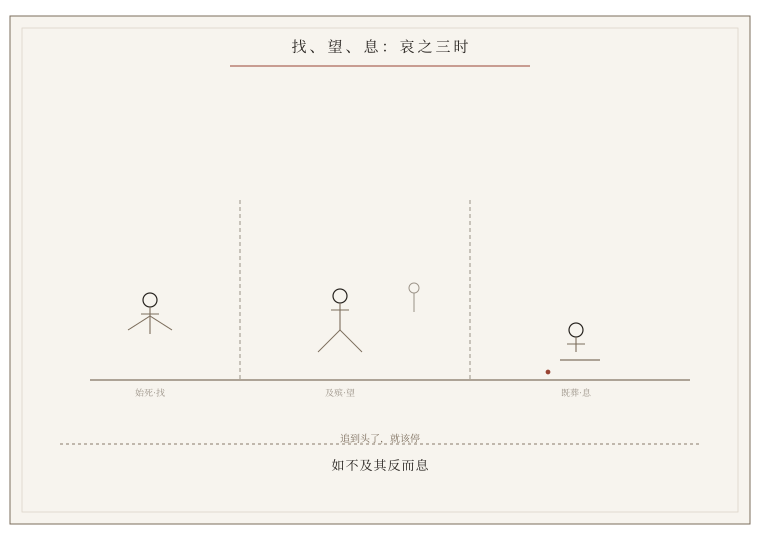

檀弓下 · 四·四十六 · 第 371 课
颜丁善居丧：始死，皇皇焉如有求而弗得；及殡，望望焉如有从而弗及；既葬，慨焉如不及其反而息。
说什么事：颜丁善于居丧。刚死的时候，他惶惶不安，像在找什么却找不到；到殡的时候，他望了又望，像跟着谁走却赶不上；到既葬之后，他慨然若失，像再赶不上了，就停下不追了。
落在哪一层：以「渐」量礼。论哀有三个阶段，每一段有每一段的样子。
为何编在此位：上节论兵之节，此节论哀之节。一外一内，此卷自武将终，复归于一人之心。
【经】顏丁善居喪：始死，皇皇焉如有求而弗得；及殯，望望焉如有從而弗及；既葬，慨焉如不及其反而息。
【注】顏丁，魯人。／從，隨也。慨，憊貌。
【疏】此一节论孝子居丧哀杀有渐之事。「始死，皇皇焉如有求而弗得」者，「皇皇」犹彷徨，如所求物不得。上《檀弓》云「始死，充充如有穷」，谓形貌穷屈，亦彷徨求而不得之心，彼此各举其一。／「及殡，望望焉如有从而弗及」者，谓殡后容貌望望焉，如有从逐人后行而不及之。上《檀弓》云「既殡，瞿瞿如有求而不得」，与此亦同也。但始死，据内心所求；殡后，据外貌所求。／「既葬，慨焉如不及」者，谓既葬之后，中心悲，慨然如不复所及。「其反而息」者，上殡后云「从而不及」，似有可及之理；「既葬，慨焉如不及」，谓不复可及，所以文异也。上《檀弓》云「既葬，皇皇如有望而不至」，此谓「既葬慨焉如不及」，亦同也。／此「始死，皇皇」者，是皇皇之甚，故云「如有求而弗得」；上《檀弓》云「既葬，皇皇」是轻，故云「望而不至」。此既葬则止，不说练祥，故葬后则慨然；上《檀弓》葬后更说练祥，故云「练而慨然，祥而廓然」。但亲之死亡，哀悼在心，初则为甚，已后渐轻，皆有求而不得、望而不及，但所据有浅深耳。
颜丁 鲁人。
善居丧 善于处丧，谓其哀得其序。
皇皇 疏云「犹彷徨」。惶遽无所依之状。
求而弗得 像在找什么却找不到。
望望 望而又望。疏云「容貌望望」。
从而弗及 像跟着走却赶不上。
慨 注「惫貌」，疲而叹。疏云「中心悲，慨然如不复所及」。
反而息 追不上了，就停下来。息，止也。
颜丁善于居丧。刚死时，他惶惶如在找什么而找不到；到殡时，他望了又望，像跟着谁走却赶不上；既葬之后，他慨然若失，像再也赶不上了，便停了下来。
此章只三段，写一个人哀的三个样子。
三段的共同处是「不及」：求而不得、从而不及、如不及。
一段比一段认命，一段比一段安静。
第一层 三者皆「不及」 求而弗得、从而弗及、如不及其反而息。
三段同写一个「不及」，这是古人的眼力：哀的核心不是「痛」，是「赶不上」。
死亡是不可追之事，故哀的一切动作都是「追」的动作：找、随、赶。
第二层 皇皇：由内向外 始死之时，人还在近处：形未敛，室未空，故其状是「找」。
疏云「始死，据内心所求」。此时哀尚在屋内，四处都是他。
第三层 望望：由内转外 及殡，柩已就位，人已不可近，故其状由「找」变为「望」。
疏云「殡后，据外貌所求」。望是隔了一层之后的动作。
第四层 慨焉而息：追的终止 既葬，土已覆，望亦无所望。
疏辨得极细：「上殡后云『从而不及』，似有可及之理；既葬『慨焉如不及』，谓不复可及」。
「反而息」三字是全章的落点。 礼不要求人永远追下去；它承认追到头了，就该停。
第五层 与《檀弓上》的详略之别 疏以《檀弓上》「充充如有穷、瞿瞿如有求而不得、皇皇如有望而不至、练而慨然、祥而廓然」与此对照，谓「各举其一」。
此篇止于葬，彼篇延及练祥；此篇三段，彼篇五段。
同一份哀，礼书给了两套刻度。 可见古人于哀，不是一句话打发，是反复地量。
第六层 今日之用：追不上，就停 今人处丧，多有两种极端：或强作无事，或长久沉溺。
此节给第三条：可以找、可以望、可以赶；赶到某一天，就该停。
「息」不是忘，是承认追不上。 承认之后，那个人的位置才从「眼前」移到「心里」。
与今日何干 凡失亲、失偶、失所依者，不妨照这三段自查：我在找，我在望，还是我已该停？答得出来，路就有了。
| 左 | 右 |
|---|---|
| 皇皇 | 彷徨，找 |
| 求而弗得 | 找而不得 |
| 望望 | 望而又望 |
| 从而弗及 | 随而赶不上 |
| 慨 | 惫而叹 |
| 如不及 | 再不可及 |
| 反而息 | 追止 |
| 渐 | 哀有其序 |
| 不及 | 哀之实相 |
画一条自左向右的路，路面为一条略向下倾的横带。路的左端画一人形立着，双手前伸，作摸索之状；中段画同一人形，身体前倾，作追随之状，前方不远处画一个渐渐的远影；右端画同一人形，坐于地上，头略低，双手放在膝上。三段之间以两道竖的细线隔开。不画脸。赭色只用在右端那人膝前的一小块地面。
